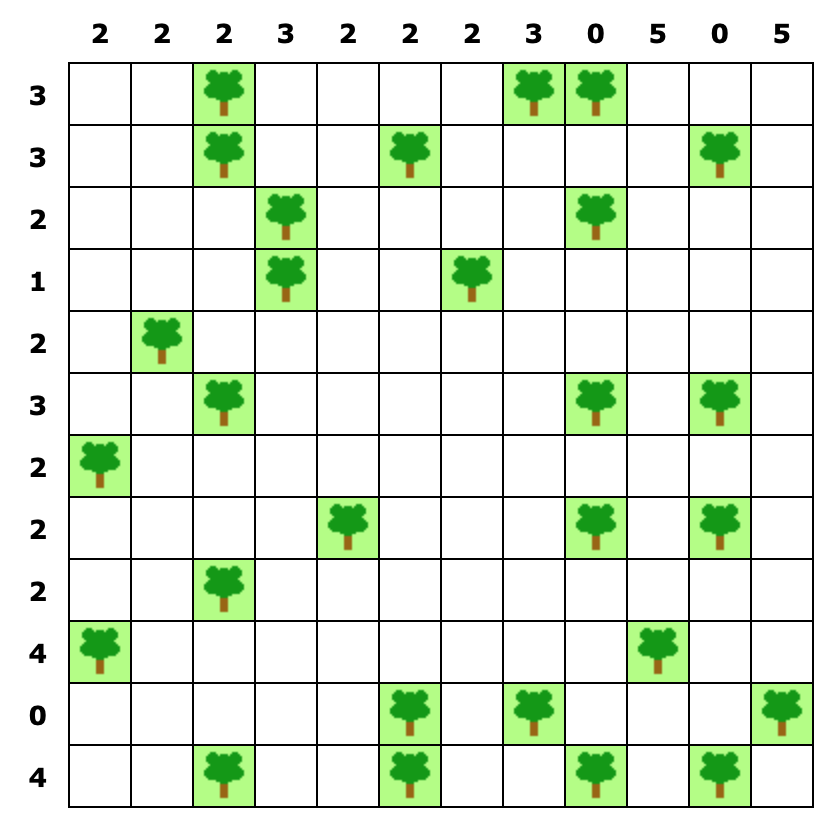

Trees and Tents
Trees and Tents is a logic game in which tents need to be placed in a grid. Every tent must be next to a tree, and tents cannot touch horizontally, vertically or diagonally. For every row and column, the number of tents is given.
The website https://brainbashers.com/tents.asp posts a new puzzle every day, of which a 12x12 example is the following:

In this post, I will implement a solver for this puzzle in Julia using the JuMP package for mathematical optimization. The complete code as a jupyter notebook can be found here.
Problem definition
The puzzle can be formulated as a linear programming problem. There are three types of constraints:
- every tent must be next to a tree,
- the number of tents for every row and column is given,
- tents are not allowed to touch.
Even though we treat this puzzle as an optimization problem, there is no objective to be maximized or minimized in this case; any placements of tents satisfying the constraints is a valid solution. This is similar to the sudoku solutions in which the objective is also unimportant.
Julia’s JuMP package provides a clean interface to defining such a problem, and solving it with various solvers. In this case, we use GLPK since it’s free and works great for this problem. Solving the problem is a matter of writing down the constraints and calling JuMP.optimize.
using JuMP, GLPKAfter loading the necessary packages, we need to define the puzzle displayed above. In the website’s html code, the puzzle is represented by three strings.
lcpuzzleis a string of numbers, denoting the cells from left to right, top to bottom. The values represent whether the corresponding cell is blank (0), or contains a tree (1) or a tent (2). Note that this string contains the solution to the problem as well, so this allows us to check the solution that JuMP found afterwards.lcrownumbersis a string of numbers which denote the number of tents per row.lcrolnumbersis a string of numbers which denote the number of tents per column.
# from html, 0=blank, 1=tree, 2=tent
lcpuzzle = "001202011200021001020012000120001200020100100000010200200000201000001212102020000000000010021012201000000200102002020102000001010001001201201212"
lcrownumbers = "332123222404"
lccolnumbers = "222322230505"We rewrite the above representation into something that is more easy to work with:
treesis a list of(i,j)tuples corresponding to the locations of the trees.row_sumsandcol_sumsare lists of integers denoting the totals per row and column.nis the size of the game, which is in this case 12.
puzzle = [parse(Int, i) for i in lcpuzzle]
n = Int(sqrt(length(puzzle)))
trees = [(i, j) for i in 1:n, j in 1:n if puzzle[(i-1)*n + j] == 1]
row_sums = [parse(Int, i) for i in lcrownumbers]
col_sums = [parse(Int, i) for i in lccolnumbers]We initialize the solver, telling JuMP that we want to use GLPK. The variable that JuMP optimizes over is an n\times n matrix x, consisting of binary values, where a 0 means no tent for that cell, and a 1 means that the cell contains a tent.
model = Model(with_optimizer(GLPK.Optimizer))
@variable(model, x[1:n, 1:n], Bin)Constraints
We are now ready to define the constraints. We start with the requirement that a tent be next to a tree.
First, a tent cannot be on top of a tree. Hence, if a tree is on position (row, col), then x[row, col] must be 0.
Next, for every cell (row, col) we check whether there is a tree next to this cell. If not, then this cell cannot contain a tent, hence x[row, col] should be 0.
for row in 1:n, col in 1:n
# is not on a tree
if (row, col) in trees
@constraint(model, x[row, col] == 0)
end
# should be next to a tree
found = false
for tree in trees
if abs(tree[1] - row) + abs(tree[2] - col) <= 1
found = true
end
end
if !found
@constraint(model, x[row, col] == 0)
end
endThe next constraint makes sure that the number of tents in the rows and columns add up to the right values. This can be done simply by summing the columns and rows of the matrix x, since this equals counting the number of ones.
for i in 1:n
@constraint(model, sum(x[i, :]) == row_sums[i])
@constraint(model, sum(x[:, i]) == col_sums[i])
endLastly, we need to encode the fact that the tents may not touch horizontally, vertically or diagonally. In other words, every 2\times2 square contains at most one tree, which is also easy to establish using the representation we chose.
for row in 1:(n-1), col in 1:(n-1)
@constraint(model, sum(x[row:row+1, col:col+1]) <= 1)
endSolution
Now that we have represented the puzzle as a Linear Program, we can simply tel JuMP to optimize this. Within a second, it spits out a solution. Since Julia supports Unicode characters, we can visualize the solution as a grid of emoji.
JuMP.optimize!(model)
solution = JuMP.value.(x)
for row in 1:n
for col in 1:n
if solution[row, col] == 1
print("⛺")
elseif (row, col) in trees
print("🌲")
else
print("◻️")
end
print(" ")
end
println("")
end◻️ ◻️ 🌲 ⛺ ◻️ ⛺ ◻️ 🌲 🌲 ⛺ ◻️ ◻️
◻️ ⛺ 🌲 ◻️ ◻️ 🌲 ◻️ ⛺ ◻️ ◻️ 🌲 ⛺
◻️ ◻️ ◻️ 🌲 ⛺ ◻️ ◻️ ◻️ 🌲 ⛺ ◻️ ◻️
◻️ ⛺ ◻️ 🌲 ◻️ ◻️ 🌲 ◻️ ◻️ ◻️ ◻️ ◻️
◻️ 🌲 ◻️ ⛺ ◻️ ◻️ ⛺ ◻️ ◻️ ◻️ ◻️ ◻️
⛺ ◻️ 🌲 ◻️ ◻️ ◻️ ◻️ ◻️ 🌲 ⛺ 🌲 ⛺
🌲 ◻️ ⛺ ◻️ ⛺ ◻️ ◻️ ◻️ ◻️ ◻️ ◻️ ◻️
◻️ ◻️ ◻️ ◻️ 🌲 ◻️ ◻️ ⛺ 🌲 ◻️ 🌲 ⛺
⛺ ◻️ 🌲 ◻️ ◻️ ◻️ ◻️ ◻️ ◻️ ⛺ ◻️ ◻️
🌲 ◻️ ⛺ ◻️ ◻️ ⛺ ◻️ ⛺ ◻️ 🌲 ◻️ ⛺
◻️ ◻️ ◻️ ◻️ ◻️ 🌲 ◻️ 🌲 ◻️ ◻️ ◻️ 🌲
◻️ ◻️ 🌲 ⛺ ◻️ 🌲 ⛺ ◻️ 🌲 ⛺ 🌲 ⛺That’s it! I like the JuMP syntax a lot and will definitely use it to solve more puzzles!